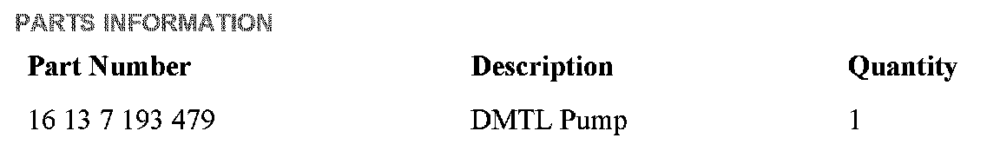
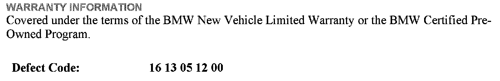
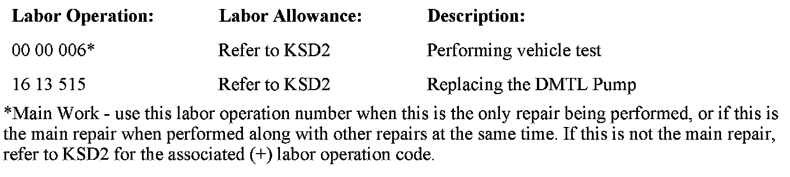

Emissions - MIL ON And DTC FC 2A17 Stored
SI B12 19 10Engine Electrical Systems
August 2010
Technical Service
SUBJECT
Service Engine Soon Lamp Illuminated: FC 2A17 DMTL System Error
MODEL
E82 and E88 (1 Series) with N51, N52K and N54 engines
E83 (X3) with N52K engine
E85 (Z4) with N52K engine
E90, E91, E92 and E93 (3 Series) with N51, N52, N52K and N54 engines
E60 and E61 (5 Series) with N52, N52K and N54 engines
E70 (X5) with N52K engine
E71 (X6) with N54 engine
SITUATION
The customer complains that the Service Engine Soon lamp is illuminated. When diagnosed, FC 2A17 DMTL System Error is stored in the DME fault memory.
CAUSE
Internal failure of the DMTL pump
PROCEDURE
After reading the fault from the DME memory, replace the DMTL pump only. Do not complete the test plan for the specified fault. Refer to Repair Instruction REP 16 13 015, Removing and installing/replacing tank leakage diagnosis module.
If other faults are stored in the vehicle, complete the test plan applicable to those faults.
Note:
TeileClearing authorization is not required for the DMTL pump replacement procedure described in this bulletin. Please write in the comment section of the warranty claim: "Replaced per SI B12 19 10".

PARTS INFORMATION


WARRANTY INFORMATION